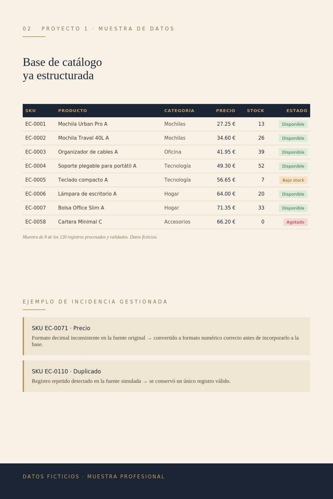

PROYECTO 01
Catálogo de productos
para e-commerce
Preparación y depuración de un catálogo de 120 productos ficticios: estandarización de campos, categorización, revisión de precios y stock, y control de calidad final.
120productos procesados
118disponibles
6incidencias detectadas
100%datos revisados
Ver proceso aplicado
- Introducción y normalización de datos de producto (SKU, precio, stock, categoría).
- Estandarización de categorías y subcategorías.
- Revisión de precios, stock y coherencia de estado.
- Asociación de imágenes por referencia (formato SKU.jpg).
- Detección y resolución de duplicados.
- Redacción y normalización de descripciones.